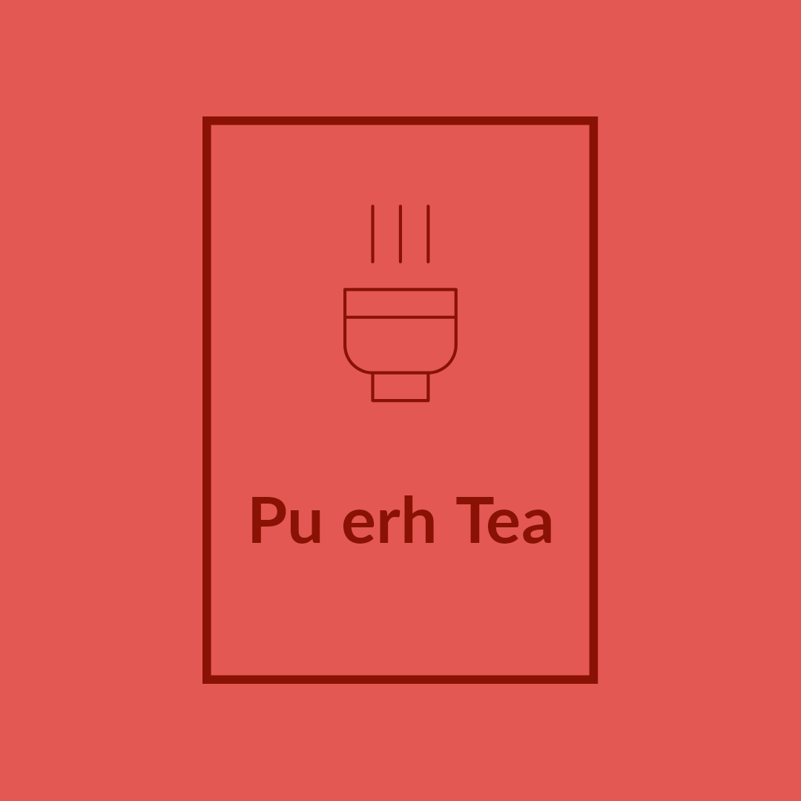
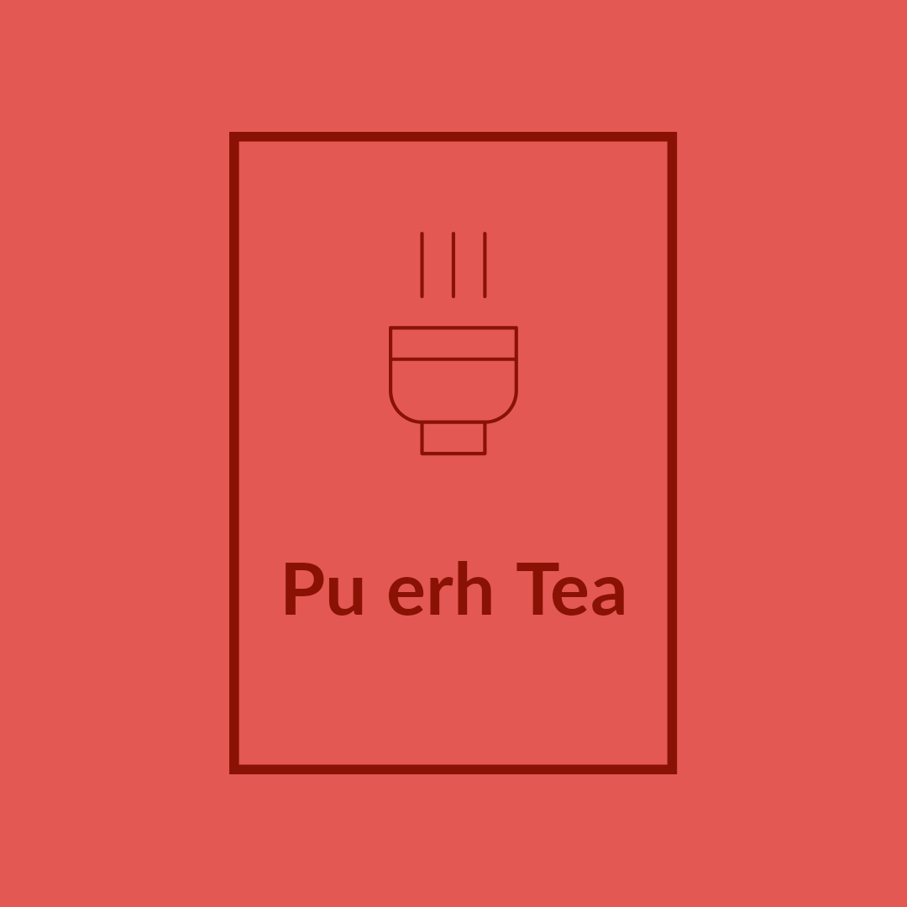

tea is facilitated by microbial cultures that are present on the leaves. Once the fermentation process is complete, the Pu Erh tea is often compressed into cakes, bricks, or other shapes. This is done to make the tea easier to transport and store, as well as to promote further aging and fermentation. The compression process can vary depending on the desired shape and size of the tea. For example, cakes of Pu Erh tea are typically made by compressing the fermented leaves into a mold and then wrapping the mold in cloth or paper. The wrapped mold is then placed under a heavy weight to compress the tea into a compact cake shape. Other shapes of Pu Erh tea, such as bricks or tuo cha, are made using different molds and compression techniques. Overall, the compression process is an important part of the production of Pu Erh tea, as it helps to shape the tea and can also affect its flavor and aroma over time